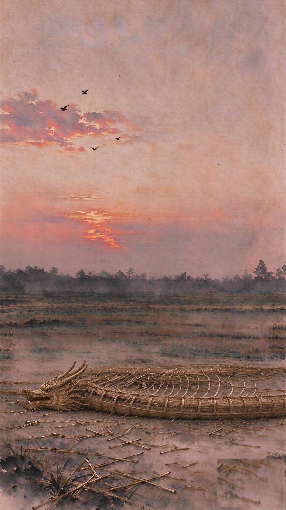
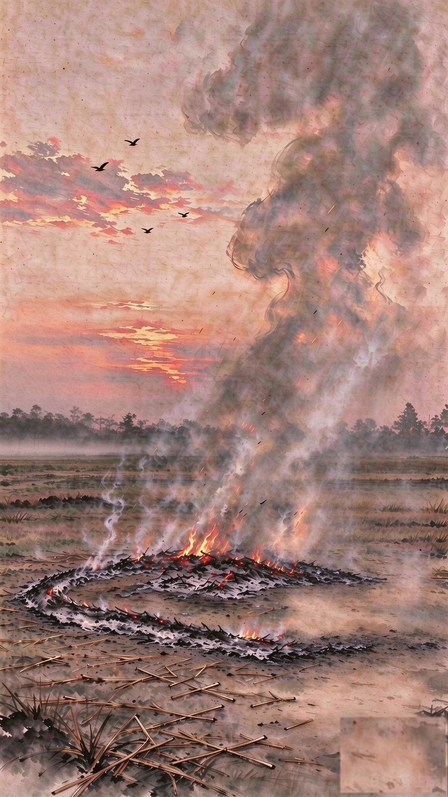

送龙上天

轻触任意处 · 星火引路
它不是被烧掉了，它是回去了。
取之于田，还之于田。
火尽了，灰落进土里。
草龙回到田里——编它的人还在，明年，还会有人把它扎起来。
你变成什么样，不只看你飞得多高；
更看你最后给出了什么。
龙回到田里，下一茬稻子才长得出来；
上一代人还了田，下一代人才有稻草。
送龙上天 · 湖口民俗：焚化送龙，纸灰还田，取意秸秆归土。焚化前，掌龙头者高声「张彩」——唱一句祝词，众人齐和「好哇」：「保护风调又雨顺，保护五谷再丰登。」
向上滑动